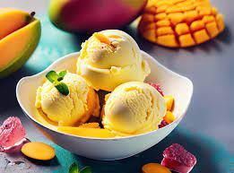
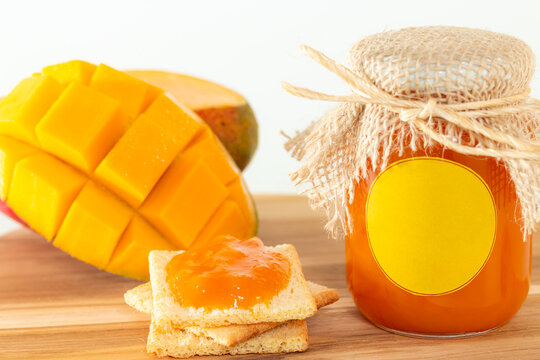

THE KING OF FRUITS
Mango is a really good source of vitamin C, is that (mangoes)
are a decent source of vitamin A, folate and are pretty high in fiber, which is beneficial for colon cancer prevention, heart disease and weight control.
Yummey Mangoes
Improve your gut health. Mangoes are good sources of both types of fiber, both soluble and insoluble.
Support your healthy weight goals.Boost hair and skin health.Help lower cholesterol.
Control your blood pressure.Help prevent some types of cancer.Mangoes can help stabilize your digestive system.
They offer both amylase compounds and dietary fiber, which can help you avoid constipation.
Amylase compounds can help dissolve other foods in your stomach, breaking down difficult starches.
Mango, the “King of Fruits,” is an economically important fruit in various parts of the world. In addition to its
excellent
tropical flavor, mangoes embody nutrition and make eating healthy and delightful.
Mango Juice

Mango juice is a good source of vitamins A, C, and E, as well as minerals like potassium and magnesium.
These nutrients are essential for maintaining overall health and supporting various bodily functions,
including immune function, vision, and skin health. Mangoes contain antioxidants like flavonoids, beta-carotene,
and vitamin C, which help protect cells from damage caused by harmful free radicals. Antioxidants may also have
anti-inflammatory properties and contribute to reducing the risk of chronic diseases like heart disease and cancer.
high vitamin C content in mango juice can help boost the immune system, making the body
more resilient to infections and illnesses. Mangoes contain dietary fiber, which aids digestion and help.
Mango Icecream

Mango ice cream, like any other food, can offer certain benefits, though it's important to note
that it should be consumed in moderation as part of a balanced diet. Here are some potential benefits
of mango ice cream. It is a basic ice cream flavored with either fresh sweet ripe mangoes
or with artificial mango flavorings. It is one of the most sold flavors in the Asian countries. A conventional
Mango ice cream is made with heavy cream, sugar, milk, eggs and mangoes or flavorings.Mangoes
are rich in vitamins A and C, which help boost your immune system and promote healthy skin. Additionally,
they contain antioxidants that reduce the risk .Why is Natural Sweetness. Mangoes are naturally sweet.
Mango Cake
While mango cake may not offer as many health benefits as fresh mangoes due to the additional
ingredients like flour, sugar, and fats, it can still provide some nutritional value.Here are a few potential benefits
of mango cake .While some of these nutrients may be lost during the baking process, mango cake can still
retain some of these vitamins and minerals, depending on the recipe and ingredients used.
While mango cake may not contain as much fiber as fresh mangoes, it still contributes some
fiber from ingredients like whole wheat flour or fruit puree.The carbohydrates in mango cake can provide
a quick source of energy, although it's important to consume sweets like cake in moderation.
Mango Jam

Mango ice cream, like any other food, can offer certain benefits, though it's important to note
that it should be consumed in moderation as part of a balanced diet. Here are some potential benefits
of mango ice cream. It is a basic ice cream flavored with either fresh sweet ripe mangoes
or with artificial mango flavorings. It is one of the most sold flavors in the Asian countries. A conventional
Mango ice cream is made with heavy cream, sugar, milk, eggs and mangoes or flavorings.Mangoes
are rich in vitamins A and C, which help boost your immune system and promote healthy skin. Additionally,
they contain antioxidants that reduce the risk .Why is Natural Sweetness. Mangoes are naturally sweet.